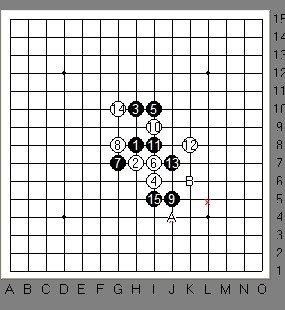
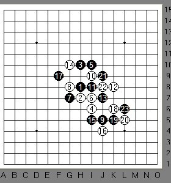
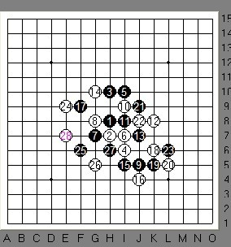
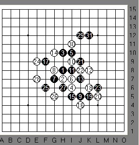

就叫我正华
#1 就叫我正华 作者：茗弈宽容 发表时间：2010-3-11 11:54:34
|
我已经很久没写师父宫牧洲的文章了，虽然他无时不在我的牵挂中。 师父不再是以前那个小孩了，自从今年北京庙会看到他的照片，着实吓了我一大跳，以前那个可爱的“小兔子”如今已经变成一只“长颈鹿”！高大，健硕！嘻嘻，这里绝没有丝毫不尊重的意思，我和师父是亲密无间的。偶在师父眼里永远是调皮的小朋友，师父在我心里既伟大又是那么的可爱。 昨天在三手见到师父，我和他下上了。“师父，我不开谱，我们下山口吧。”考虑到师父下棋时间少，现在很多流行变化他都不知道，我体谅的说道。“不！下哪个我都不怕！”师还父是那样斩钉截铁，我猜想那边的他此时一定高抬着头，偏着脖子，歪着小嘴，十分不服气。那样子可爱的要命！我们下了瑞星2打，师父执黑： |

这个15最早诚心弟弟准备研究，这几天见如慧姐姐也在下，我很想看看。但我话还没说出来，师父就下了这个15。“哇，师父怎么知道我想看这个15？莫不是我肚子里的蛔虫？”师父嘿嘿道：“我并不知道你想看啊，我只是没有别的好点可以下。”喔唷，看来俺师父还是很跟得上流行的呢。16手A.B两个点都比较好，我选择了A点。

师父17手果断档了白的眠三，我上边和左边暂时没什么棋，18反活2。19手师反父三，我想这个20手我可能档反了，但暂时没看到黑左边有很大的进攻性，故没放在心上。21手？我没猜透师父的想法，21一般会在7和15中间眠三，也能够限制6的斜线发展。师父这个21表面上看是在放，（最后我们就知道这手的强大了）这样大跳的眠三一般中间要断开，而我断开了自己也活2，我飞快点了下去，怕他悔。23师父应该是H6控制我这个活2自己眠三了吧？嘿，谁知道师父的23又大大出乎我的意料！这个23把白右下的棋全部封死了。更要命的是我这个时候根本没意识到危险，还以为师下父得很保守，我得意起来。。。。。。

为了向师父证实我现在的进步和“强大的”控制力，我24比较潇洒的走在了这个点 。师父微微一笑25仍旧拓展，心里有点紧张了，我分析了下，这个局部如做杀，下边个眠三比较关键26进攻中防守，28继续压缩黑的空间。这时弟弟大雪无痕也进来了，“正华大师好！”“好啊，”师父说。也？怎么师父变正华了？我纳闷，这时雪儿告诉我，师父给自己改名字了，他说宫牧洲这个名字不太好，正华比较传统些。哈哈，确实常有人问起我师父的名字，当我说出宫牧洲时，多数人会说。哦，那个日本人呀，
。师父微微一笑25仍旧拓展，心里有点紧张了，我分析了下，这个局部如做杀，下边个眠三比较关键26进攻中防守，28继续压缩黑的空间。这时弟弟大雪无痕也进来了，“正华大师好！”“好啊，”师父说。也？怎么师父变正华了？我纳闷，这时雪儿告诉我，师父给自己改名字了，他说宫牧洲这个名字不太好，正华比较传统些。哈哈，确实常有人问起我师父的名字，当我说出宫牧洲时，多数人会说。哦，那个日本人呀， 我当场无语中。俺师父的爱国情怀这里再次得到体现，正华，正宗中华！
我当场无语中。俺师父的爱国情怀这里再次得到体现，正华，正宗中华！
回到棋盘，师父这时长考5分钟左右，下了一手29，我亲爱的朋友，如果是您会下哪呢？您能先想想他会下哪吗？

师父29一落子，我感到巨大的压力了，事实上我这个30手确实判断错误了，31杀得非常完美！这里考考大家，30手最强的防守在哪？看了的朋友请跟贴回答。
我输了，输得服气，输得高兴。我的师父，以后我就叫他正华师父了。“刀儿呀，你还要加油，思维不要固定在一个模式。”正华语重心长。毫无疑问，师父是我的幸运我的神话。
（特别感谢水月，写完这篇文章第一个叫他看，他指出我把师父写成了师傅：师父是老师，师傅是修自行车的，这两个不能乱用的，不过把师父当成修自行车的也不是你一个。偶遂改之。）
［ 五子痴 于 2010-3-11 12:29:23 时奖励此帖[金币加 20 威望加1］
［此帖子已被 茗弈宽容 在 2010-3-11 14:26:43 编辑过］
#2 Re:就叫我正华 作者：天逸 发表时间：2010-3-11 15:19:15
支持下~~羡慕下~~有个好师傅真好~~~［ 五子痴 于 2010-3-11 20:00:29 时花20金币送鲜花一朵］
#3 Re:就叫我正华 作者：踏雪小子 发表时间：2010-3-11 18:43:01
J11，首先排除，因为30=J11,31=H12,则杀。30=I11.31=K12，黑也杀，也排除I11。H11也不行。G11稍强。G12较强，黑棋起码暂时构不成什么威胁。K9？应该也好？就能算这些了，头晕了。［ 五子痴 于 2010-3-11 20:00:17 时奖励此帖[金币加 20 威望加1］
#4 Re:就叫我正华 作者：举步回眸浅浅笑 发表时间：2010-3-12 14:53:20
 支持
支持
#5 Re:就叫我正华 作者：望穿天涯 发表时间：2010-3-12 15:01:12
师父,先恭喜你有位这么好的师父,通过这盘棋就足以证明偶师公的棋艺有多精湛了,同时也使我大开了眼界,呵呵!虽然偶一直没有机会见过师公,但下次师公要是有时间再来的话,师父一定要告诉我哈,好让师公他老人家也认识认识偶这个从未谋面的徒孙哈!
［ 茗弈小刀 于 2010-3-12 17:00:00 时花20金币送鲜花一朵］